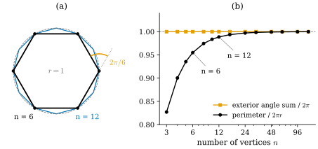

32.1 What Is Discrete Differential Geometry?
Goals
- smooth 대상을 수치로 근사하는 것과 discrete 대상 위에서 smooth 이론의 구조를 정확히 재현하는 것의 차이를 설명할 수 있다.
- 원에 내접한 정 \(n\)각형에서 “수렴하는 양”(둘레)과 “정확히 보존되는 양”(exterior angle의 합)을 구분하고 증명할 수 있다.
- discrete 정의를 얻는 “the game”의 세 단계와, 좋은 discrete 정의를 판단하는 기준을 말할 수 있다.
- Track 2의 장들이 어떤 순서와 의존 관계로 이어지는지 안다.
Prerequisites
- 다변수 미적분과 linear algebra(Chapter overview의 Builds on). Track 2는 Track 3에 의존하지 않는다.
- 권장: Section 0.1(differential geometry의 지도), Section 0.2(curvature의 직관), Section 31.2(mesh의 discrete curvature를 고르는 기준).
- signed angle \(\angle(u, v) \in (-\pi, \pi)\): (5.6.2). exterior angle: Definition 5.6.9.
Motivation
Track 1에서는 differential geometry의 지도를 직관으로 그렸고(Chapter 0), 3D vision에서 그 언어가 어떻게 쓰이는지 보았으며(Chapter 27–31), linear algebra, 미적분, topology의 기초를 다졌다(Chapter 1–3). 특히 Section 31.2는 triangle mesh의 curvature에 정의가 여럿 있고, 그중 무엇을 쓸지는 “무엇을 정확히 보존하는가”로 고른다는 관찰로 끝났다. Track 2는 이 관찰을 출발점으로 삼는 분야인 discrete differential geometry(이산 미분기하, DDG)를 처음부터 차근차근 다룬다.
컴퓨터는 유한개의 수만 저장한다. 곡선은 점의 목록으로, surface는 삼각형의 목록으로 저장된다. 반면 differential geometry의 정의는 거의 모두 극한과 도함수로 쓰여 있다. 그렇다면 점의 목록 위에서 curvature 같은 양을 어떻게 정의해야 하는가? 이 절은 이 질문에 답하는 두 가지 태도를 비교하고, 가장 단순한 예인 원과 정다각형으로 둘의 차이를 정확히 보인다.
Approximating versus Discretizing
첫째 태도는 수치 근사다. smooth 곡선 \(\gamma\)를 간격 \(h\)로 sampling하고, 도함수를 차분으로 바꾼다. 예를 들어 \(\gamma''(s) \approx \bigl(\gamma(s + h) - 2\gamma(s) + \gamma(s - h)\bigr)/h^2\)이다. 이렇게 얻은 수는 smooth 값의 근삿값이고, 좋고 나쁨은 \(h \to 0\)일 때 얼마나 빨리 수렴하는지로 잰다. smooth 곡선이 먼저 있고, 점의 목록은 그것을 엿보는 창일 뿐이다.
둘째 태도가 DDG의 태도다. 다각형이나 mesh를 smooth 대상의 그림자로 보지 않고 그 자체로 하나의 기하학적 대상으로 본다. 그리고 그 대상 위에서 smooth 이론의 중요한 구조, 곧 정리가 정확히 성립하도록 정의를 고른다. 강의 슬라이드는 이 분야의 큰 목표를 “differential geometry를 계산에 맞는 언어로 옮기는 것”으로 요약한다 [CMU-DDG L1]. 노트의 첫 장도 같은 생각을 예로 든다. mesh의 vertex 둘레 각의 합은 일반적으로 \(2\pi\)가 아니지만, 각을 일정한 비율로 다시 재서 합이 정확히 \(2\pi\)가 되게 할 수 있다는 것이다 [Cr ch1]. smooth surface의 tangent plane에는 방향이 “한 바퀴” 있다는 구조를 거친 mesh에서도 지키는 셈이다.
두 태도는 서로 반대가 아니다. 좋은 discrete 정의는 대개 refinement에서 smooth 값으로 수렴하기도 한다. 차이는 무엇을 먼저 요구하느냐에 있다. 다음 예가 이 차이를 수식으로 보여 준다.
A First Example: Polygons Inscribed in a Circle
반지름 \(r\)인 원에 내접한 정 \(n\)각형을 생각하자. 원의 둘레는 \(2\pi r\)이고, 원을 한 바퀴 돌면 접선 방향도 정확히 한 바퀴, 곧 \(2\pi\)만큼 돈다(Theorem 0.2.7). 정 \(n\)각형에서 이 두 양에 해당하는 것은 둘레와 exterior angle의 합이다. exterior angle은 vertex에서 진행 방향이 꺾이는 signed angle이다(Definition 5.6.9).

Figure 32.1.1의 (a)부터 보자. 육각형(검정)은 원(회색 점선)보다 확실히 안쪽에 있고, 십이각형(파랑)은 원에 훨씬 가깝다. 오른쪽 vertex에서는 들어오는 edge를 그대로 늘인 점선과 실제로 나가는 edge가 \(2\pi/6 = 60^\circ\)를 이룬다(주황 호). 이 꺾임이 여섯 번 있으므로 한 바퀴 돌면 진행 방향은 정확히 \(6 \cdot 2\pi/6 = 2\pi\) 돈다. 이제 (b)에서 두 양을 \(n\)에 따라 비교하자. 검은 원(둘레)은 \(n\)이 커질수록 점선 \(1\)로 올라가지만 닿지는 않는다. 주황 사각형(exterior angle의 합)은 처음부터 점선 위에 있다. 다음 명제가 이 그림을 정확한 부등식과 등식으로 바꾼다.
Proposition 32.1.1 (regular polygons: convergent length, exact total turning). \(n \ge 3\)인 정수와 \(r \gt 0\)에 대해 \(\gamma_i = r\bigl(\cos(2\pi i/n), \sin(2\pi i/n)\bigr)\) (\(i = 0, \dots, n - 1\))을 이 순서로 잇는 정 \(n\)각형 \(P_n\)을 생각하자(첨자는 \(n\)을 법으로 읽는다). (a) \(P_n\)의 둘레 \(L_n = 2nr\sin(\pi/n)\)은
을 만족한다. 따라서 \(L_n \to 2\pi r\)이고 오차는 \(n^{-2}\)의 상수배 이하다. (b) 모든 vertex에서 exterior angle은 \(2\pi/n\)이고, 그 합은 모든 \(n \ge 3\)에서 정확히 \(2\pi\)다.
이 명제가 말하는 것. 정다각형은 원의 길이를 근사할 뿐 정확히 재현하지 못한다. 반면 “한 바퀴 돌면 방향이 \(2\pi\) 돈다”는 사실은 vertex가 셋뿐이어도 정확히 재현한다.
Proof idea: 한 edge의 길이를 삼각함수로 구하고 \(\sin x\)를 \(x\)와 \(x - x^3/6\) 사이에 끼운다. exterior angle은 \(P_n\)이 \(2\pi/n\) 회전에 대해 대칭이라는 것에서 바로 나온다.
Proof. (a) \(a_i = 2\pi i/n\)이라 하면 덧셈정리에서
\[ \begin{aligned} \abs{\gamma_{i+1} - \gamma_i}^2 &= r^2\bigl[(\cos a_{i+1} - \cos a_i)^2 + (\sin a_{i+1} - \sin a_i)^2\bigr]\\ &= 2r^2\bigl(1 - \cos(2\pi/n)\bigr) = 4r^2\sin^2(\pi/n) \end{aligned} \]이다. \(0 \lt \pi/n \lt \pi\)이므로 \(\sin(\pi/n) \gt 0\)이고, 각 edge의 길이는 \(2r\sin(\pi/n)\)이다. edge가 \(n\)개이므로 \(L_n = 2nr\sin(\pi/n)\)이다. 이제 \(x \gt 0\)에서 \(x - x^3/6 \le \sin x \lt x\)임을 보이자. \(f(x) = x - \sin x\)는 \(f(0) = 0\)이고 \(f'(x) = 1 - \cos x \ge 0\)이며, \(f'\)은 \(x = 2k\pi\)에서만 \(0\)이므로 \(f\)는 strictly increasing이다. 따라서 \(x \gt 0\)에서 \(\sin x \lt x\)이다. 이것을 \([0, x]\)에서 적분하면 \(1 - \cos x = \int_0^x \sin u\,du \le \int_0^x u\,du = x^2/2\)이다. \(g(x) = \sin x - x + x^3/6\)는 \(g(0) = 0\)이고 \(g'(x) = \cos x - 1 + x^2/2 \ge 0\)이므로 \(x \ge 0\)에서 \(g(x) \ge 0\)이다. \(x = \pi/n\)을 대입하면 \(2\pi r - L_n = 2nr\bigl(x - \sin x\bigr)\)이고 \(0 \lt x - \sin x \le x^3/6\)이므로
\[ 0 \lt 2\pi r - L_n \le 2nr\cdot\frac{\pi^3}{6n^3} = \frac{\pi^3 r}{3n^2} \]이다. (b) \(R\)을 원점 둘레의 \(2\pi/n\) 회전이라 하면 \(\gamma_{i+1} = R\gamma_i\)이다(\(R^n = I_2\)이므로 \(i = n - 1\)에서도 성립한다). edge vector \(e_i = \gamma_{i+1} - \gamma_i\)는 \(e_{i} = R\gamma_{i} - R\gamma_{i-1} = Re_{i-1}\)을 만족하고, \(R\)은 길이를 보존하므로 단위벡터 \(e_i/\abs{e_i}\)도 앞의 것을 \(2\pi/n\)만큼 돌린 것이다. \(n \ge 3\)이면 \(2\pi/n \in (0, \pi)\)이므로, signed angle의 성질((5.6.2) 아래: \(v = R_\varphi u\)이고 \(\varphi \in (-\pi, \pi)\)이면 \(\angle(u, v) = \varphi\))에 의해 vertex \(\gamma_i\)의 exterior angle은 \(\angle(e_{i-1}/\abs{e_{i-1}}, e_i/\abs{e_i}) = 2\pi/n\)이다. \(n\)개를 더하면 \(2\pi\)이다.
Example 32.1.2 (numbers). \(r = 1\)이면 \(L_6 = 12\sin(\pi/6) = 6\)이고 \(2\pi - L_6 = 0.2832\)이다. upper bound (32.1.1)은 \(\pi^3/108 = 0.2871\)이다. \(n = 12\)이면 \(L_{12} = 24\sin(\pi/12) = 6.2117\), 오차 \(0.0715\), upper bound \(\pi^3/432 = 0.0718\)이다. \(n\)을 두 배로 늘릴 때마다 오차는 약 \(1/4\)이 된다. \((2\pi - L_n)\,n^2\)은 \(n = 6, 12, 96\)에서 \(10.19, 10.30, 10.33\)으로 \(\pi^3/3 = 10.335\)에 다가가므로, upper bound의 상수도 개선할 수 없다. 반면 exterior angle의 합은 어느 \(n\)에서나 \(2\pi\)이고, 계산해 보면 \(10^{-15}\) 정도의 반올림 오차만 남는다.
Verification: verify/v-32-1-what-is-ddg.py
Remark 32.1.3 (this is not special to regular polygons). (b)는 정다각형의 대칭 덕분이 아니다. 스스로 만나지 않는 다각형을 반시계 방향으로 돌면 exterior angle의 합은 언제나 정확히 \(2\pi\)다(Example 5.6.10, Theorem 5.6.11, Proposition 5.6.12). Section 32.3은 이 합을 첫째 discrete curvature로 삼고, 닫힌 discrete curve라면 스스로 만나도 합이 \(2\pi\)의 정수배임을 보인다(Proposition 32.3.4). 거꾸로 (a)의 둘레는 다각형 자신의 길이로는 정확하다. 틀린 것은 “원의 길이”로 읽을 때뿐이다. inscribed polygonal path의 길이가 곡선의 길이로 수렴한다는 일반적인 사실은 Theorem 4.2.11이다.
The Game
정다각형의 예에서 exterior angle의 합이 정확했던 것은 우연이 아니다. “curvature를 적분하면 접선이 돈 각”이라는 smooth 사실을 다각형에 그대로 적용했기 때문이다. DDG에서 discrete 정의를 얻을 때 흔히 쓰는 절차를 강의 슬라이드는 “게임”이라 부른다 [CMU-DDG L1].
- smooth setting에서 서로 동치인 정의를 여러 개 적는다.
- 각 정의를 discrete 대상에 그대로 적용한다.
- 그렇게 얻은 discrete 정의들은 대개 서로 다르다. 각각이 smooth 대상의 어떤 성질을 정확히 지키는지 비교한다.
이 장은 plane curve의 curvature로 이 게임을 한 판 해 본다. 1단계는 Section 32.2(curvature의 동치인 특징 넷), 2단계는 Section 32.3(discrete curvature 넷), 3단계는 Section 32.3의 표와 Section 32.4의 curvature flow다. 좋은 discrete 정의를 판단하는 기준은 대개 다음 세 가지다(슬라이드도 같은 세 기준을 든다).
- 구조 보존: smooth 대상의 성질이나 정리를 (일부라도) 정확히 만족하는가. 위의 exterior angle 합이 예다.
- 수렴: discrete 대상을 촘촘하게 하면 smooth 값에 다가가는가, 그리고 얼마나 빨리 다가가는가. 위의 둘레가 예다.
- 비용: 계산하기 쉽고, 그 정의로 세운 방정식을 빠르고 안정적으로 풀 수 있는가.
셋을 모두 갖춘 하나의 정의가 있으면 좋겠지만, 흔히 그렇지 않다. 어떤 discrete 정의도 smooth 대상의 성질을 모두 지키지 못하는 상황을 강의 슬라이드는 “no free lunch”라 부른다. Section 32.4에서 curvature flow로 그 한 예를 보고, 이 장에서 확인할 수 있는 것과 없는 것을 구분한다.
Where DDG Is Used
강의 슬라이드는 앞부분에서 DDG가 쓰이는 분야로 geometry processing, shape analysis, machine learning, numerical simulation, architecture and design, discrete models of nature를 든다 [CMU-DDG L1]. 이 study set에서 해당 내용이 나오는 곳과 함께 몇 가지만 적는다.
- Geometry processing. mesh를 매끄럽게 하기(curvature flow, Section 31.3, [Desbrun99], Chapter 41–42), 평면에 펼치기(Chapter 43), surface 위의 거리 계산(heat method [Crane13], Chapter 44), direction field 설계(Chapter 45). 노트의 첫 장은 smoothing, parameterization, vector field design 같은 작업 여럿이 대개 간단한 Poisson equation 하나를 푸는 것으로 쓰인다고 말한다 [Cr ch1]. 그 방정식의 행렬은 discrete Laplacian이고 sparse하다(Chapter 42).
- Shape analysis. curvature나 Laplacian의 eigenfunction처럼 회전과 translation에 무관한 양을 모양의 설명자로 쓴다(Section 31.4).
- Simulation. 머리카락이나 케이블 같은 가는 물체를 discrete curve와 그 위의 frame으로 모형화한다. discrete elastic rods [Bergou08]가 대표적이고, 그 기하는 Chapter 37에서 다룬다.
- Machine learning. mesh와 graph 위의 학습에서도 graph Laplacian 같은 discrete 연산자가 기본 재료로 쓰인다 [Bronstein17].
- Architecture and design. 건물의 외피는 평평한 판과 곧은 부재로 지어지므로, 이 경우 다각형과 mesh는 근사가 아니라 만들 물건 그 자체다. 그래서 discrete 대상 위의 기하가 직접 설계의 언어가 된다.
이 목록은 개관일 뿐이다. 각 응용의 수학은 해당 장에서, 그 장에 필요한 정의와 정리를 갖춘 뒤에 다룬다.
A Map of Track 2
Track 2는 CMU 15-458/858 강의(Keenan Crane)의 순서를 따른다 [CMU-DDG]. 강의 슬라이드의 course roadmap을 참고해 이 study set은 Track 2를 두 줄기로 정리한다. 하나는 curve와 surface와 curvature의 줄기이고, 다른 하나는 differential form을 discrete 대상 위로 옮기는 discrete exterior calculus(DEC)의 줄기다. Figure 32.1.2가 장 사이의 의존 관계다.
![Track 2의 열네 장을 상자로 그린 의존 관계도. 왼쪽 열은 위에서 아래로 32(Plane-curve curvature, 하늘색으로 강조, you are here), 37 Curves, 38 Surfaces, 39 Curvature of surfaces, 40 Discrete curvature I, 41 Discrete curvature II. 오른쪽 열은 34 Exterior algebra, 35 Exterior calculus, 36 Discrete exterior calculus, 그리고 아래쪽 42 Laplace-Beltrami와 43 Conformal geometry. 가운데 열은 맨 위의 33 Combinatorial surfaces와 맨 아래의 44 Geodesics, 45 Vector fields. 회색 화살표는 꺾인 선으로 상자 사이의 빈 곳을 지난다. 두 열 안에서는 위에서 아래로 이어지고(34에서 35, 36으로, 37에서 38, 39, 40, 41로), 32에서 37로, 33에서 36과 40으로(가운데 열을 따라 내려간다), 35에서 38로, 36에서 37, 38, 42로, 39에서 44로, 41에서 42로, 42에서 43, 44, 45로, 44에서 45로, 36에서 45로(오른쪽 바깥을 돌아) 간다.](figures/fig-32-1-2-roadmap.svg)
Figure 32.1.2를 위에서부터 따라가 보자. 맨 위 줄의 세 장은 서로 기대지 않는다. 이 장(32)은 plane curve 하나로 게임 전체를 미리 해 보는 장이고, 33은 mesh를 조합적 대상으로, 34는 differential form의 linear algebra를 다룬다. 오른쪽 열은 34 → 35 → 36으로 내려가며 DEC를 완성하고, 35와 36에서 나온 화살표가 왼쪽 열의 37과 38로 건너간다. 33에서 나온 두 화살표는 가운데 열을 따라 내려가 36과 40에 닿는다. mesh의 조합 구조는 DEC와 discrete curvature 둘 다에 쓰인다. 왼쪽 열은 37(curve)에서 41(surface의 discrete curvature)까지 곧게 내려간다. 맨 아래에서는 42가 응용 장 셋으로 가지를 친다.
| Chapter | Question | Lecture |
|---|---|---|
| 32 (이 장) | smooth plane curve의 curvature 하나에서 discrete curvature가 넷 나오는 이유, 각각이 보존하는 것 | L1 |
| 33 | mesh의 연결 구조를 어떻게 정의하고 저장하는가(simplicial complex, star·link, halfedge) | L2A, L2B |
| 34 | 넓이와 부피를 좌표 없이 재는 linear algebra(wedge product, Hodge star, \(k\)-form) | L3, L4 |
| 35 | differential form의 미분과 적분, Stokes's theorem | L5–L7 |
| 36 | mesh 위의 differential form: de Rham map, discrete \(d\)와 \(\star\) | L8, L9 |
| 37 | curve의 이론을 DEC로 다시 쓰기: turning number, space curve의 frame, curve의 flow | L10, L11 |
| 38 | surface의 differential, metric, normal을 smooth와 discrete로 | L12–L14 |
| 39 | surface의 curvature(Weingarten map, Gaussian·mean curvature) | L15 |
| 40 | 적분으로 본 discrete curvature: angle defect, discrete Gauss–Bonnet, Steiner formula | L16 |
| 41 | variation으로 본 discrete curvature: 넓이와 부피의 gradient, surface의 flow | L17 |
| 42 | Laplace–Beltrami operator와 cotan Laplacian, Poisson equation | L18 |
| 43 | 각을 보존하는 평면 펼치기 | L19–20 |
| 44 | 가장 짧은 길과 가장 곧은 길, heat method | L21–22 |
| 45 | Hodge decomposition과 vector field 설계 | 강의 없음(과제 A6) |
다른 track과의 관계는 다음과 같다. Track 1의 Chapter 31은 같은 주제(mesh, discrete curvature, cotan Laplacian, parametrization)를 3D vision의 언어로 미리 본 장이다. Track 2는 같은 대상을 정의와 완전한 증명으로 다시 쌓고, 겹치는 곳에서는 Chapter 31의 서술을 링크로 비교한다. smooth 대상의 엄밀한 이론(regular surface, manifold, Riemannian geometry)은 Track 3에 있고, Track 2의 각 절은 Go deeper 상자로 그곳을 가리킨다. Track 2를 읽는 데 Track 3은 필요 없다.
Summary
- 수치 근사는 smooth 값을 refinement의 극한으로 맞힌다. DDG는 discrete 대상 위에서 smooth 이론의 구조가 정확히 성립하도록 정의를 고른다. 좋은 정의는 대개 둘 다 한다.
- 원에 내접한 정 \(n\)각형의 둘레는 \(2\pi r\)로 \(O(n^{-2})\)의 속도로 수렴하지만, exterior angle의 합은 모든 \(n\)에서 정확히 \(2\pi\)다(Proposition 32.1.1).
- “the game”: smooth에서 동치인 정의 여럿 → 각각을 discretize → 무엇을 보존하는지 비교. 기준은 구조 보존, 수렴, 비용이다.
- 어떤 discrete 정의도 모든 성질을 지키지 못하는 상황을 “no free lunch”라 부른다.
- Track 2는 curve·surface·curvature의 줄기와 DEC의 줄기로 이루어지고, 번호 순서대로 읽으면 의존 관계가 지켜진다(Figure 32.1.2).
다음 절에서는 게임의 1단계를 한다. smooth plane curve의 signed curvature를 상기하고, 그것을 서로 동치인 네 가지 방식(접선의 각, 길이의 variation, offset curve의 길이, osculating circle)으로 쓴다. 그리고 다각형에는 왜 점마다의 curvature가 없는지 본다.
Exercises
Exercise 32.1.1 ★ 반지름 \(1\)인 원에 내접한 정팔각형의 둘레 \(L_8\), 오차 \(2\pi - L_8\), upper bound (32.1.1)을 계산하여라. 한 vertex의 exterior angle과 그 합도 구하여라.
Solution
Proposition 32.1.1(a)에서 \(L_8 = 16\sin(\pi/8) = 16 \cdot 0.382683 = 6.1229\)이다. 오차는 \(2\pi - 6.1229 = 0.1603\)이고 upper bound는 \(\pi^3/(3 \cdot 64) = \pi^3/192 = 0.1615\)이므로 부등식이 성립한다. (b)에서 exterior angle은 각각 \(2\pi/8 = \pi/4\)이고 합은 \(8 \cdot \pi/4 = 2\pi\)이다.
Exercise 32.1.2 ★ 반지름 \(r\)인 원에 외접하는 정 \(n\)각형(각 edge가 원에 접하는 것)의 둘레가 \(L_n' = 2nr\tan(\pi/n)\)임을 보이고, \(L_n \lt 2\pi r \lt L_n'\)임을 증명하여라. \(r = 1\), \(n = 6\)일 때 세 수를 비교하고, 외접 정 \(n\)각형의 exterior angle의 합도 구하여라.
Hint
edge는 원과 그 중점에서 접한다. \(h(x) = \tan x - x\)를 미분하여라.
Solution
외접 정 \(n\)각형의 한 edge는 원과 중점 \(m\)에서 접하므로 중심 \(O\)에서 \(m\)까지의 선분은 edge에 수직이고 길이가 \(r\)이다. \(O\)에서 그 edge의 두 끝을 보는 각은 \(2\pi/n\)이므로, 직각삼각형 \(O, m\), 끝점에서 반 edge의 길이는 \(r\tan(\pi/n)\)이다. 따라서 \(L_n' = n \cdot 2r\tan(\pi/n)\)이다. \(x = \pi/n \in (0, \pi/2)\)에서 \(h(x) = \tan x - x\)는 \(h(0) = 0\), \(h'(x) = \sec^2 x - 1 = \tan^2 x \gt 0\)이므로 \(\tan x \gt x\)이다. 그러면 \(L_n' = 2nr\tan x \gt 2nrx = 2\pi r\)이고, Proposition 32.1.1(a)에서 \(L_n \lt 2\pi r\)이다. \(r = 1\), \(n = 6\)이면 \(L_6 = 6 \lt 2\pi = 6.2832\) \(\lt L_6' = 12\tan(\pi/6)\) \(= 4\sqrt3 = 6.9282\)이다. 외접 정 \(n\)각형의 vertex는 \(\bigl(r/\cos(\pi/n)\bigr)\bigl(\cos(2\pi i/n + \pi/n),\) \(\sin(2\pi i/n + \pi/n)\bigr)\)이므로 Proposition 32.1.1(b)의 증명이 그대로 적용된다(\(2\pi/n\) 회전 대칭). 따라서 exterior angle의 합은 역시 정확히 \(2\pi\)이다. 원의 둘레를 안팎에서 끼우는 이 부등식은 Archimedes가 \(\pi\)를 어림한 방법이다.
Exercise 32.1.3 ★★ 원에 내접한 정 \(n\)각형의 넓이 \(A_n\)을 구하고, \(0 \lt \pi r^2 - A_n \le 2\pi^3 r^2/(3n^2)\)임을 보여라. 넓이는 “정확히 보존되는 양”인가, “수렴하는 양”인가?
Solution
중심과 이웃한 두 vertex로 이루어진 삼각형 \(n\)개로 나누면, 각 삼각형은 두 변의 길이가 \(r\)이고 끼인각이 \(2\pi/n\)이므로 넓이가 \(\tfrac12 r^2\sin(2\pi/n)\)이다. 따라서 \(A_n = \tfrac{n}{2}r^2\sin(2\pi/n)\)이다. \(y = 2\pi/n \in (0, 2\pi/3]\)라 하면 Proposition 32.1.1의 증명에서 보인 \(y - y^3/6 \le \sin y \lt y\)에 의해
\[ \begin{aligned} \pi r^2 - A_n &= \frac{n r^2}{2}\,(y - \sin y)\\ &\in \Bigl(0,\ \frac{n r^2}{2}\cdot\frac{y^3}{6}\Bigr] = \Bigl(0,\ \frac{2\pi^3 r^2}{3n^2}\Bigr] \end{aligned} \]이다(\(\tfrac{n}{2}\cdot\tfrac{8\pi^3}{6n^3} = \tfrac{2\pi^3}{3n^2}\)). 넓이도 둘레처럼 \(O(n^{-2})\)로 수렴하는 양이고, 어떤 \(n\)에서도 \(\pi r^2\)과 같지 않다. 예: \(r = 1\), \(n = 12\)이면 \(A_{12} = 6\sin(\pi/6) = 3\), 오차 \(\pi - 3 = 0.1416 \le 2\pi^3/432 = 0.1435\)이다.
Exercise 32.1.4 ★ 참인지 거짓인지 판정하고 이유를 적어라. (a) 다각형의 exterior angle의 합은 vertex를 늘릴수록 \(2\pi\)에 가까워지는 근삿값이다. (b) 원에 내접한 정 \(n\)각형의 둘레는 언제나 \(2\pi r\)보다 작다. (c) refinement에서 smooth 값으로 수렴하는 discrete 정의는 그 smooth 정리를 discrete 대상 위에서도 정확히 만족한다. (d) “the game”의 결과는 대개 하나의 올바른 discrete 정의다.
Solution
(a) 거짓. 정 \(n\)각형에서는 모든 \(n \ge 3\)에서 정확히 \(2\pi\)이고(Proposition 32.1.1(b)), 스스로 만나지 않는 반시계 방향 다각형이면 언제나 정확히 \(2\pi\)다(Theorem 5.6.11, Proposition 5.6.12). 근사가 아니다. (b) 참. (32.1.1)의 왼쪽 부등식이다. (c) 거짓. 둘레 \(L_n\)은 \(2\pi r\)로 수렴하지만 어떤 \(n\)에서도 \(L_n = 2\pi r\)가 아니다. 수렴과 구조 보존은 다른 기준이다. (d) 거짓. 3단계에서 보듯 discrete 정의는 대개 여럿 나오고 서로 다르다. 무엇을 보존하는지 보고 용도에 맞게 고른다(Section 32.3의 표).
Exercise 32.1.5 ★ Coding. NumPy로 반지름 \(1\)인 원에 내접한 정 \(n\)각형(\(n = 8, 32, 128, 512\))을 만들고, 둘레의 오차에 \(n^2\)을 곱한 값과 exterior angle의 합을 출력하여라. exterior angle은 들어오는 edge vector \(a\)와 나가는 edge vector \(b\)에서 \(\operatorname{atan2}(\det(a, b), \inner{a}{b})\)로 계산한다. 출력에서 Proposition 32.1.1의 두 결론을 읽어라.
Solution
import numpy as np
def ngon(n, r=1.0):
a = 2 * np.pi * np.arange(n) / n
return r * np.stack([np.cos(a), np.sin(a)], 1)
for n in [8, 32, 128, 512]:
X = ngon(n)
E = np.roll(X, -1, 0) - X # edge vectors e_i = x_{i+1} - x_i
L = np.linalg.norm(E, axis=1).sum() # perimeter
A = np.roll(E, 1, 0) # incoming edge at each vertex
ext = np.arctan2(A[:, 0] * E[:, 1] - A[:, 1] * E[:, 0], (A * E).sum(1))
print(f"n = {n:3d} (2 pi - L) n^2 = {(2 * np.pi - L) * n**2:.4f} "
f"sum of exterior angles = 2 pi: {abs(ext.sum() - 2 * np.pi) < 1e-12}")출력은 다음과 같다.
n = 8 (2 pi - L) n^2 = 10.2560 sum of exterior angles = 2 pi: True
n = 32 (2 pi - L) n^2 = 10.3304 sum of exterior angles = 2 pi: True
n = 128 (2 pi - L) n^2 = 10.3351 sum of exterior angles = 2 pi: True
n = 512 (2 pi - L) n^2 = 10.3354 sum of exterior angles = 2 pi: True둘째 열이 \(\pi^3/3 = 10.3354\)에 다가가므로 오차는 \(n^{-2}\)에 비례해 줄어들고((32.1.1)의 상수가 정확하다), 셋째 열은 모든 \(n\)에서 exterior angle의 합이 \(2\pi\)임(반올림 오차 \(10^{-12}\) 이내)을 보여 준다.